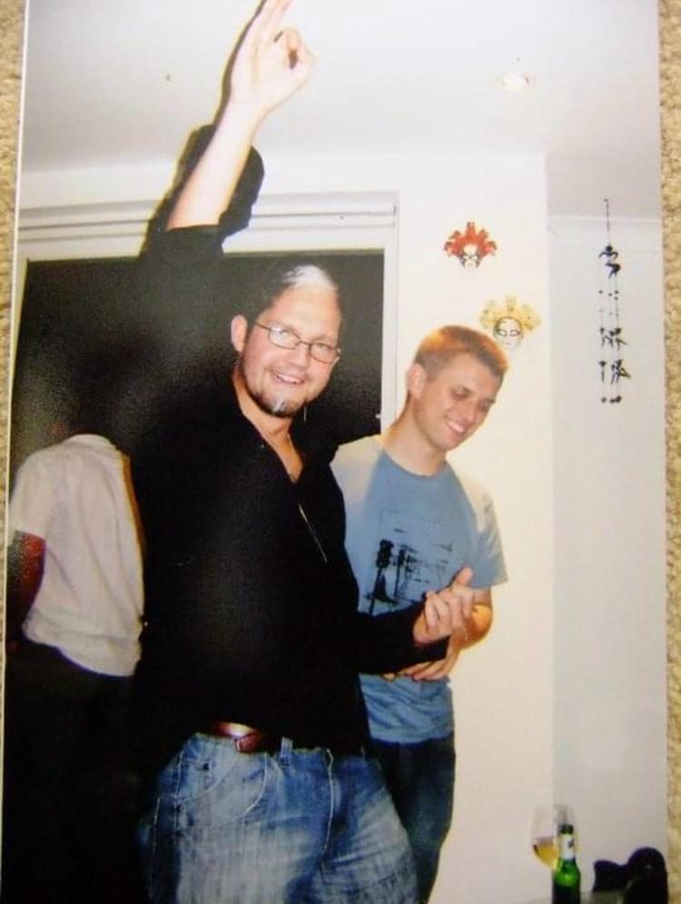
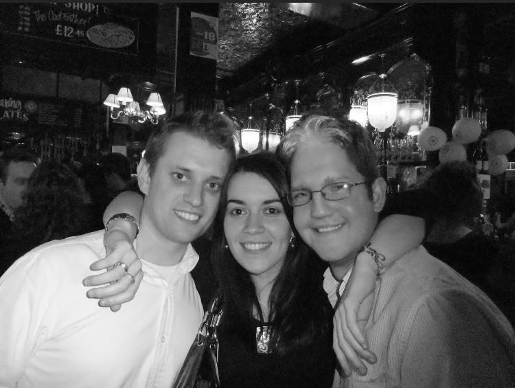
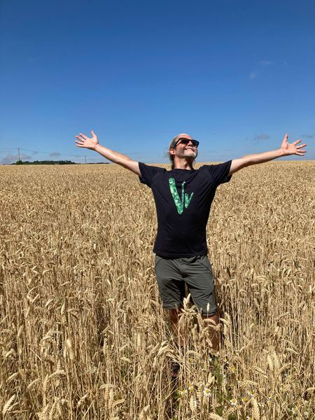
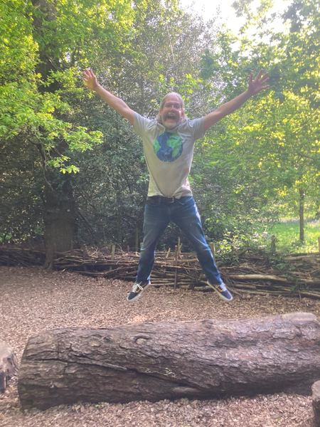
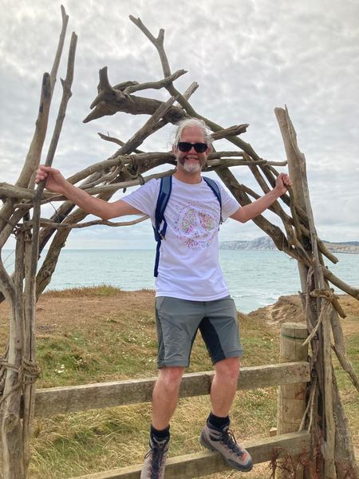

Born in Manchester. Educated in business. Blessed with nipples. The internet's most extraordinary torso belongs to an extraordinarily ordinary bloke.
5
Nipples
1
Business Degree
5
Career Ventures
1
Legend
The Early Years
Nicholas was born in Manchester in the early 1980s to a family of perfectly standard nipple counts. The third nipple was first noticed by his mum during bath time at age two. She described it as "a bonus." The fourth was identified by a school nurse during a routine check-up in Year 7, causing what Nic later described as "a bit of a scene in the medical room." The fifth arrived — or was discovered, depending on your philosophical outlook — during freshers' week at university, when a flatmate pointed it out after a particularly enthusiastic game of shirts vs. skins football.
"Most people go to uni and discover politics, or philosophy, or themselves. I discovered a fifth nipple."

Undated, early career. The arm is raised. The shirt is down. Nips visible: 0. This photograph has been studied by the community for years and has yielded nothing.
The Education
Nic studied Business Management at university, graduating with what he describes as "a solid 2:1 and a torso that would eventually be worth more than the degree." The irony is not lost on him: a man with five nipples holds a business degree, making each nipple — statistically speaking — a learn-ed nipple.
"People ask if I use my degree," he says. "I tell them I'm managing the most unique personal brand in Britain. So yes. Constantly."

The university years. Three friends, nine nipples between them, and not one of them aware of what was coming. Nips visible: 0.
The Five Ventures
In a coincidence that Nic insists is "completely accidental and honestly a bit weird," he has held exactly five distinct career ventures — one per nipple. Each chapter of his professional life has brought its own lessons, and each nipple, he claims, provided silent moral support throughout.
Venture #1
Recruitment Consultant
Fresh out of university, Nic entered the world of recruitment. He excelled at reading people, which he attributes to "having more nipples than most — it gives you a sixth sense, except it's technically a fifth nipple." Left after 18 months to pursue "something with more soul."
Nipple 1: Upper Right
Venture #2
Co-Founder, Mobile Car Valeting
Launched a mobile car cleaning service with a mate from school. The business model was sound; the mate's work ethic less so. Nic describes this period as "educational" and "a reminder that not everyone brings five nipples' worth of effort to a partnership."
Nipple 2: Upper Left
Venture #3
Property Development
Entered the property game with characteristic Mancunian confidence. Flipped two houses. Renovated a flat. Lost money on a garage conversion that "taught him more than university ever did." The nipples, he notes, "were with him through every viewing."
Nipple 3: Mid Right
Venture #4
Personal Training & Fitness
Retrained as a personal trainer, finally putting the torso to professional use. Built a loyal client base who valued his motivational style, described by one regular as "intense, supportive, and slightly distracting because of the nipple situation." Clients averaged a 94% retention rate — the same score most people can only dream of on Pin the Nipple.
Nipple 4: Mid Left
Venture #5
Internet Phenomenon
The current chapter. One photograph. Five nipples. 15,000+ subscribers. A global community. An interactive game played over 2 million times. A $1,200 Elite package that keeps selling out. Nic didn't plan this. But then again, he didn't plan the nipples either. Some things are simply destiny.
Nipple 5: The Wildcard
Nic Today
Now semi-retired from the ventures and fully committed to the countryside, Nic spends most of the year outdoors, photographed constantly, and clothed without exception. Our research team has catalogued every known image. The results are consistent.

Arms out. Nips visible: 0.

Airborne. Nips visible: 0.

The arch, again. Nips visible: 0.
The Official Nipple Registry
1
The Original
Upper right. The first. The OG. Present from birth and setting the standard for all that would follow. Perfectly positioned, medically unremarkable, and foundational to the collection.
2
The Mirror
Upper left. The symmetrical counterpart. Together with Nipple 1, they form what dermatologists describe as "a textbook pair." Little did they know they were merely the opening act.
3
The Discovery
Mid-torso right. The one that started the conversation. First identified at age two during bath time. Nic's mum reportedly said, "Oh, there's another one," with the calm of a woman who had clearly been expecting it.
4
The School Nurse Special
Mid-torso left. Discovered during a Year 7 health check. The school nurse reportedly went quiet for several seconds before saying, "I'm going to need a second opinion." The second opinion confirmed: nipple.
5
The Wildcard
Position classified. The final frontier. Discovered during freshers' week and the subject of more internet debate than any anatomical feature in recorded history. Its exact location has been the subject of over 200 pages of community analysis and one amateur documentary.
In His Own Words
"Look, I didn't ask for five nipples. Nobody does. You don't tick a box on a form. They just... appear. And once they're there, what are you going to do? Hide them? Pretend you've only got the standard two? That's no way to live. I've got five nipples and a business degree. I'm using both."